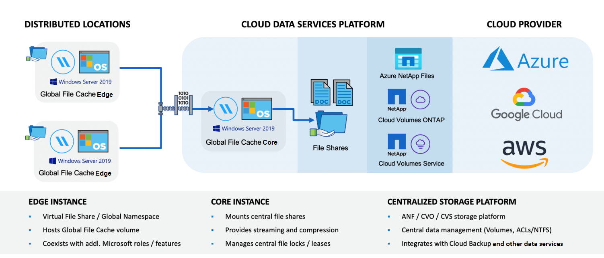
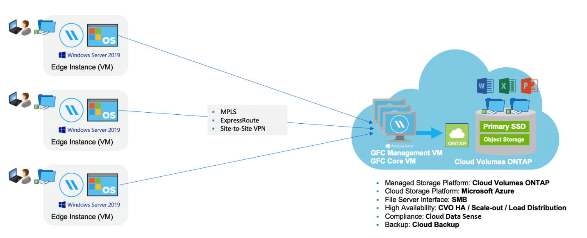

Demander de modifier un document
Demander de modifier un document Modifier sur GitHub
Modifier sur GitHub Guide des contributeurs
Guide des contributeursEn savoir plus sur Global File cache
Contributeurs
NetApp Global File cache vous permet de consolider les silos de serveurs de fichiers distribués en un seul environnement de stockage global cohérent dans le cloud public. Cela crée un système de fichiers accessible partout dans le cloud que tous les emplacements distants peuvent utiliser comme s’ils étaient locaux.
Présentation
La mise en œuvre de Global File cache engendre une empreinte du stockage unique et centralisée, par rapport à une architecture de stockage distribuée qui nécessite une gestion des données locales, des sauvegardes, une gestion de la sécurité, un stockage et une infrastructure réparties sur chaque site.

Caractéristiques
Global File cache offre les fonctionnalités suivantes :
-
Consolidez et centralisez vos données dans le cloud public, et exploitez l’évolutivité et les performances de vos solutions de stockage
-
Créez un seul ensemble de données pour les utilisateurs du monde entier et exploitez la mise en cache intelligente des fichiers afin d’améliorer l’accès aux données, la collaboration et les performances
-
Utilisez un cache autogéré et autogéré et éliminez les copies et les sauvegardes complètes des données. Utilisation de la mise en cache locale des fichiers pour les données actives et réduction des coûts de stockage
-
Accès transparent depuis les succursales via un espace de noms global avec verrouillage centralisé des fichiers en temps réel
En savoir plus sur les fonctionnalités de Global File cache et ses cas d’utilisation "ici".
Composants du cache de fichiers global
Global File cache comprend les composants suivants :
-
Serveur global de gestion du cache des fichiers
-
Cœur de cache de fichiers global
-
Cache global de fichiers Edge (déployé sur vos sites distants)
L’instance principale de NetApp Global File cache est montée sur vos partages de fichiers d’entreprise hébergés sur la plateforme de stockage interne au choix (par exemple, Cloud Volumes ONTAP, Cloud Volumes Service, Et Azure NetApp Files), puis crée la structure Global File cache qui permet de centraliser et de consolider les données non structurées en un seul ensemble de données, qu’elles résident sur une ou plusieurs plateformes de stockage dans le cloud public.

Plateformes de stockage prises en charge
Les plates-formes de stockage prises en charge pour Global File cache diffèrent selon l’option de déploiement sélectionnée.
Options de déploiement automatisé
Lorsqu’il est déployé à l’aide de BlueXP (anciennement Cloud Manager), le cache de fichiers global est pris en charge avec les types d’environnements de travail suivants :
-
Cloud Volumes ONTAP dans Azure
-
Cloud Volumes ONTAP dans AWS
Cette configuration vous permet de déployer et de gérer l’intégralité du déploiement côté serveur de Global File cache, y compris le serveur Global File cache Management Server et Global File cache Core, depuis BlueXP.
Options de déploiement manuel
Les configurations globales de cache de fichiers sont également prises en charge avec Cloud Volumes ONTAP, Cloud Volumes Service, Azure NetApp Files et Amazon FSX pour les systèmes ONTAP installés sur une infrastructure de stockage de cloud public. Les solutions sur site sont également disponibles sur les plateformes NetApp AFF et FAS. Dans ces installations, les composants côté serveur de Global File cache doivent être configurés et déployés manuellement, et non en utilisant BlueXP.
Voir la "Guide de l’utilisateur NetApp Global File cache" pour plus d’informations.
Fonctionnement de Global File cache
Global File cache crée une structure logicielle qui met en cache les jeux de données actives dans les bureaux distants à travers le monde. Par conséquent, les utilisateurs de l’entreprise bénéficient d’un accès transparent aux données et de performances optimales à l’échelle mondiale.

La topologie référencée dans cet exemple est un modèle en étoile dans lequel le réseau de bureaux distants/emplacements accède à un ensemble commun de données dans le cloud. Les points clés de cet exemple sont les suivants :
-
Magasin de données centralisé :
-
Une plateforme de stockage de cloud public d’entreprise, telle qu’Cloud Volumes ONTAP
-
-
Structure globale de cache de fichiers :
-
Extension du magasin de données central aux sites distants
-
Instance principale du cache de fichiers global, montage sur les partages de fichiers d’entreprise (SMB).
-
Instances globales File cache Edge s’exécutant dans chaque emplacement distant.
-
Présente un partage de fichiers virtuel dans chaque emplacement distant permettant l’accès aux données centrales.
-
Héberge le cache de fichiers intelligent sur un volume NTFS personnalisé (
D:\).
-
-
Configuration réseau :
-
Connectivité MPLS (Multiprotocol Label Switching), ExpressRoute ou VPN
-
-
Intégration avec les services de domaine Active Directory du client.
-
Espace de noms DFS pour l’utilisation d’un espace de noms global (recommandé).
Le coût
Le coût d’utilisation de Global File cache dépend du type d’installation que vous avez choisi.
-
Toutes les installations nécessitent de déployer un ou plusieurs volumes dans le cloud (par exemple, Cloud Volumes ONTAP, Cloud Volumes Service ou Azure NetApp Files). Ce qui entraîne des frais pour le fournisseur cloud sélectionné.
-
Toutes les installations nécessitent également de déployer au moins deux machines virtuelles dans le cloud. Ce qui entraîne des frais pour le fournisseur cloud sélectionné.
-
Serveur global de gestion du cache des fichiers :
Dans Azure, cette opération s’exécute sur une machine virtuelle D2S_V3 ou équivalent (2 vCPU/8 Go de RAM) avec SSD standard de 127 Go
Dans AWS, s’exécute sur une instance m4.large ou équivalente (2 vCPU/8 Go de RAM) avec des disques SSD à usage général de 127 Go
-
Cœur de cache de fichiers global :
Dans Azure, cette opération s’exécute sur une machine virtuelle D4S_V3 ou équivalente (4 vCPU/16 Go de RAM) avec SSD premium de 127 Go
Dans AWS, cette instance s’exécute sur une instance m4.XLarge ou équivalent (4 vCPU/16 Go de RAM) avec un SSD générique de 127 Go
-
-
Lorsqu’elles sont installées avec Cloud Volumes ONTAP dans Azure ou AWS (les configurations prises en charge entièrement déployées via BlueXP), deux options de tarification sont disponibles :
-
Pour les systèmes Cloud Volumes ONTAP dans Azure ou AWS, vous pouvez payer annuellement un coût de 3,000 000 $ pour chaque instance de cache de fichiers Edge.
-
Si vous optez pour les systèmes Cloud Volumes ONTAP dans Azure, vous pouvez également choisir le pack Cloud Volumes ONTAP Edge cache. Cette licence basée sur la capacité vous permet de déployer une seule instance Global File cache Edge pour chaque 3 To de capacité provisionnée. "En savoir plus".
-
-
Lorsqu’ils sont installés à l’aide des options de déploiement manuel, le prix est différent. Pour obtenir une estimation de haut niveau des coûts, voir "Calcul de votre potentiel d’économies" Vous pouvez également consulter votre ingénieur solutions Global File cache pour discuter des meilleures options de déploiement pour votre entreprise.
Licences
Global File cache inclut un serveur de gestion des licences (LMS) basé sur logiciel qui vous permet de consolider votre gestion des licences et de déployer des licences vers toutes les instances Core et Edge à l’aide d’un mécanisme automatisé.
Lorsque vous déployez votre première instance Core dans le data Center ou le cloud, vous pouvez choisir de désigner cette instance comme LMS pour votre organisation. Cette instance LMS est configurée une fois, se connecte au service d’abonnement (via HTTPS) et valide votre abonnement à l’aide de l’ID client fourni par notre service de support/opérations au moment de l’inscription. Après avoir fait cette désignation, vous associez vos instances Edge au LMS en fournissant votre ID client et l’adresse IP de l’instance LMS.
Lorsque vous achetez des licences Edge supplémentaires ou que vous renouvelez votre abonnement, notre service support/opérations met à jour les informations de licence, par exemple le nombre de sites ou la date de fin de l’abonnement. Une fois que le LMS a interrogé le service d’abonnement, les détails de la licence sont automatiquement mis à jour sur l’instance LMS et s’appliquent à vos instances de réseau de réseau central et Edge.
Voir la "Guide de l’utilisateur NetApp Global File cache" pour plus d’informations sur les licences.
Limites
La version de Global File cache prise en charge dans BlueXP nécessite que la plateforme de stockage back-end utilisée comme stockage central soit un environnement de travail dans lequel vous avez déployé un seul nœud Cloud Volumes ONTAP ou une paire haute disponibilité dans Azure ou AWS.
À l’heure actuelle, les autres plateformes de stockage et autres fournisseurs cloud ne sont pas prises en charge avec BlueXP, mais elles peuvent être déployées à l’aide de procédures de déploiement héritées. Ces autres configurations, par exemple le cache de fichiers global avec Cloud Volumes ONTAP ou Cloud Volumes Service sur Google Cloud, Azure NetApp Files ou Amazon FSX pour les systèmes ONTAP, sont prises en charge par les procédures héritées. Voir "Présentation et intégration de Global File cache" pour plus d’informations.